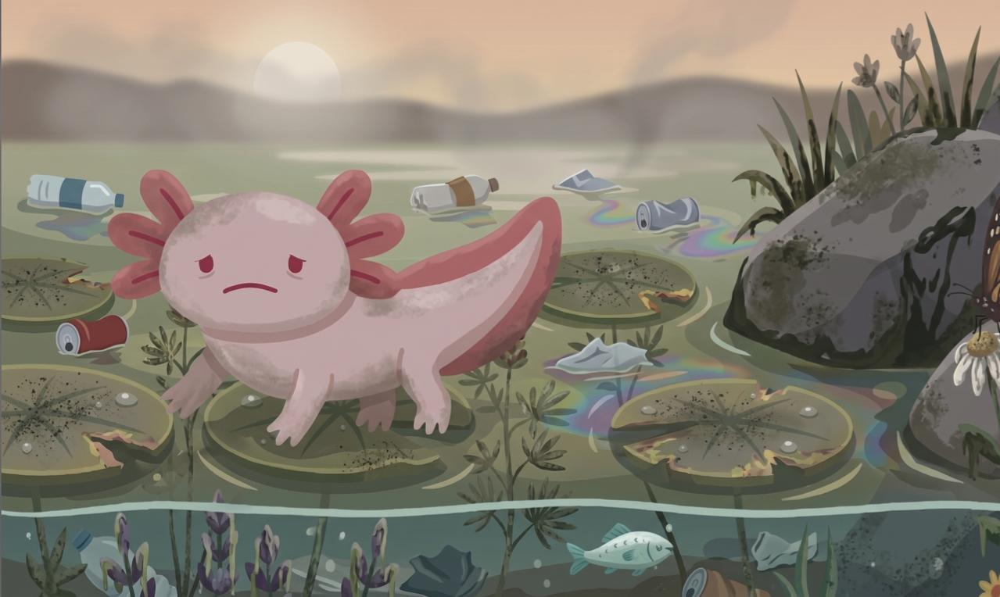
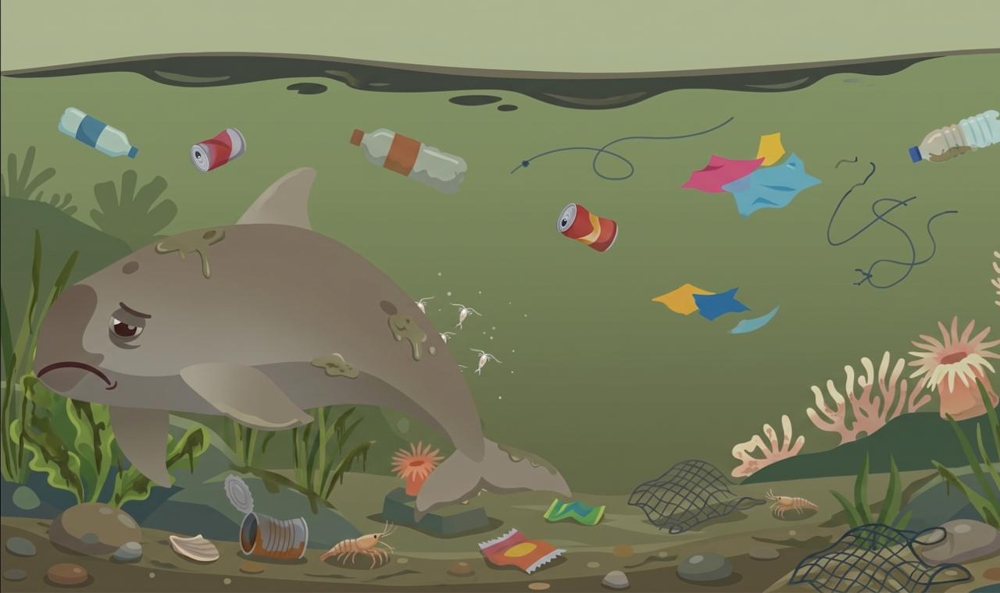

Especies en Peligro Inmediato
Conoce las amenazas directas que ponen en riesgo la existencia de las especies más representativas de nuestra fauna nativa.

Peligro Crítico (CR)Ajolote Mexicano
Ambystoma mexicanum
Principales Amenazas:
- Contaminación hídrica: Residuos urbanos, químicos y aguas negras en Xochimilco.
- Urbanización: Reducción drástica del sistema de canales por asentamientos ilegales.
- Especies invasoras: Peces exóticos (carpa y tilapia) devoran sus huevos y crías.
Su población silvestre ha disminuido catastróficamente. Sobrevive principalmente gracias a santuarios controlados, laboratorios científicos y chinampas ecológicas.

Peligro Crítico (CR)Vaquita Marina
Phocoena sinus
Principales Amenazas:
- Redes de enmalle: Quedan atrapadas y se ahogan accidentalmente en redes ilegales.
- Pesca de Totoaba: Pesca furtiva y tráfico internacional del buche del pez totoaba.
- Endogamia: La bajísima cantidad de individuos restantes reduce su variabilidad genética.
Es el cetáceo más pequeño y amenazado del mundo. Con estimaciones críticas de menos de 10 ejemplares vivos, su conservación es una emergencia global.
 En Peligro (EN)
En Peligro (EN)
Teporingo (Zacatuche)
Romerolagus diazi
Principales Amenazas:
- Pérdida de hábitat: Tala inmoderada y conversión de bosques en zonas de cultivo.
- Ganadería invasiva: Destrucción de zacatonales (pastos altos indispensables para anidar).
- Incendios forestales: Quemas agrícolas descontroladas en laderas volcánicas.
Exclusivo de las faldas de los volcanes del centro del país. Su territorio fragmentado dificulta la reproducción silvestre y supervivencia a largo plazo.
 Vulnerable (VU)
Vulnerable (VU)
Loro Yucateco
Amazona xantholora
Principales Amenazas:
- Comercio ilegal: Captura y saqueo de nidos para venderlos ilegalmente como mascotas.
- Deforestación: Tala de selvas bajas en la Península de Yucatán por desarrollos urbanos.
- Crisis climática: El aumento de huracanes y sequías prolongadas destruye sus alimentos silvestres.
Aunque mantiene un rango estable en comparación con otros loros, la pérdida de árboles maduros para anidar en oquedades amenaza su estabilidad a futuro.
¿Cómo Puedes Ayudar?
La protección de nuestra flora y fauna endémicas requiere de un esfuerzo coordinado en tres frentes complementarios.
Acciones Individuales
Pequeños cambios cotidianos que restan presión sobre los recursos naturales y minimizan nuestra huella ecológica directa.
Cero Plásticos de Un Solo Uso
Sustituye botellas, cubiertos y bolsas plásticas por alternativas reutilizables. Evitas que estos lleguen a ríos, humedales y mares.
Consumo Inteligente del Agua
Cierra llaves, recolecta agua pluvial y usa detergentes biodegradables. Proteger el agua limpia conserva el hábitat del ajolote.
Alimentación Consciente
Evita el consumo de productos exóticos no regulados o especies en veda. Reduce la demanda comercial que fomenta la caza ilegal.
Acciones Comunitarias
Uniendo fuerzas a nivel vecinal y local para multiplicar el alcance y crear entornos sustentables auto-regulados.
Comercio Sostenible
Consume en cooperativas agrícolas locales, apoya el turismo ecológico y promueve las chinampas tradicionales sustentables de Xochimilco.
Educación Ambiental
Organiza talleres, comparte información verídica con tus vecinos y educa a los niños de tu comunidad sobre el valor de la fauna endémica.
Brigadas Locales de Limpieza
Participa activamente en reforestaciones locales y jornadas ciudadanas para limpiar bosques, parques, pastizales volcánicos y ríos.
Acciones Globales
Estrategias sistemáticas e internacionales para reestructurar legislaciones, destinar fondos y ejercer presión política ambiental.
Apoyo a ONGs y Científicos
Dona fondos a organizaciones reguladas de conservación y colabora financiando proyectos científicos de reproducción en cautiverio.
Exigencia de Políticas Públicas
Firma peticiones colectivas nacionales para prohibir las redes de pesca nocivas y presiona a legisladores para proteger santuarios ecológicos.
Ciencia Ciudadana
Reporta avistamientos de especies endémicas amenazadas en plataformas internacionales como Naturalista, ayudando al monitoreo satelital.